( психолог-психоаналитик )
Софья Канина
Помогаю взрослым, подросткам и детям с 7 лет разобраться, что мешает жить так, как хочется. Без быстрых советов и готовых техник: вместе ищем, откуда берётся тревога и почему повторяются одни и те же истории.
- Санкт-Петербург и онлайн
- 50 минут
- 4 000 ₽
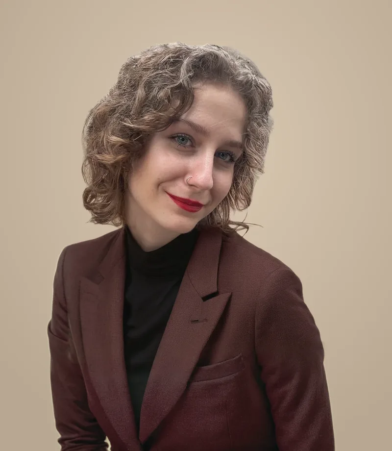
Как я работаю
Я не «чиню» людей. Мы вместе разбираемся, что мешает вам жить так, как хочется.
- Высшее психологическое образование: Санкт-Петербургский государственный институт психологии и социальной работы, 2025, диплом с отличием
- Работаю психологом больше 3 лет уточнить: с какого года
- Прохожу личную терапию и супервизию
- В работе с детьми использую арт-терапию и песочную терапию
- Веду долгосрочные групповые и индивидуальные занятия
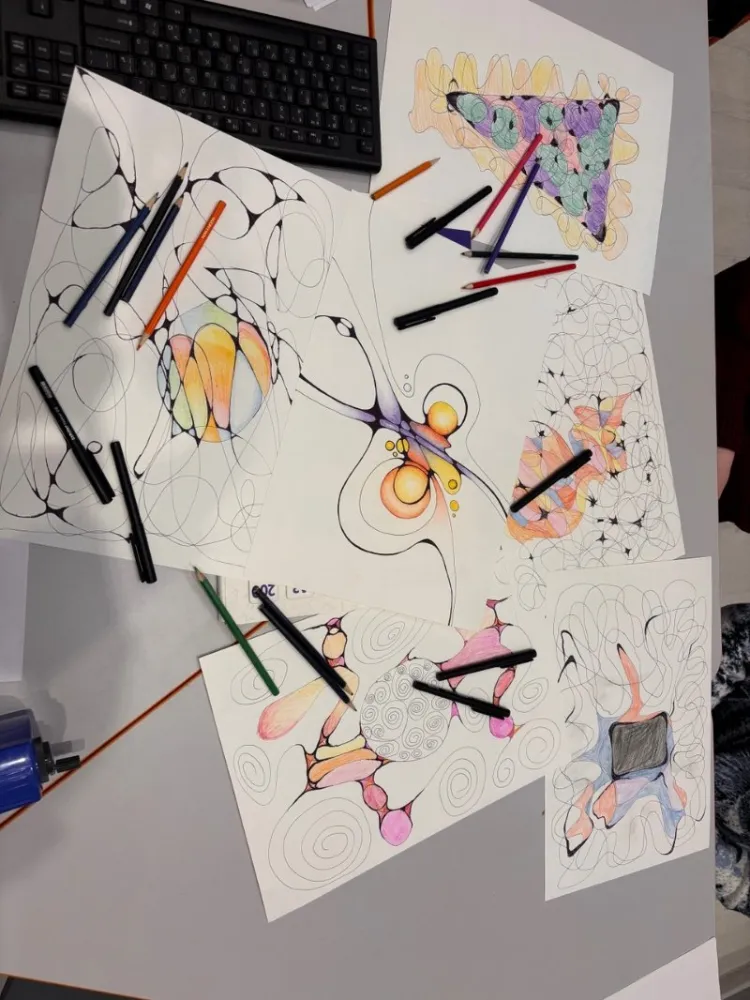
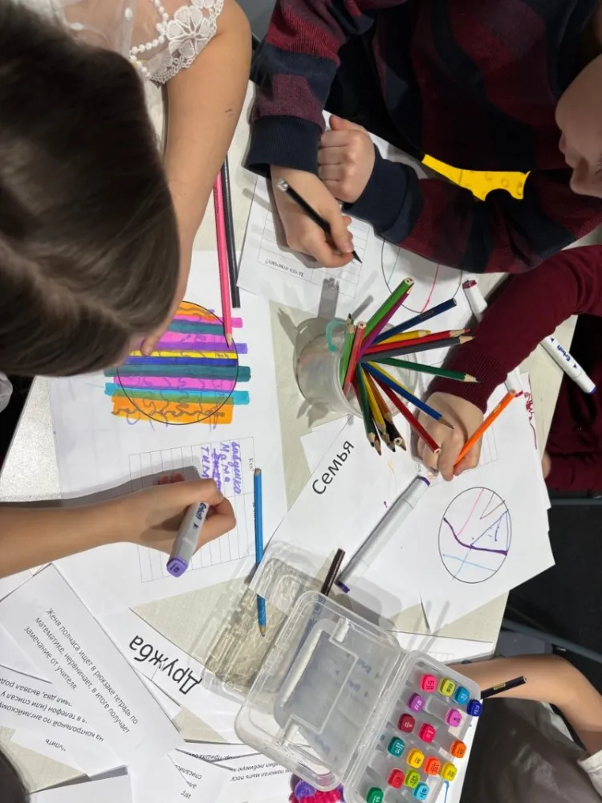
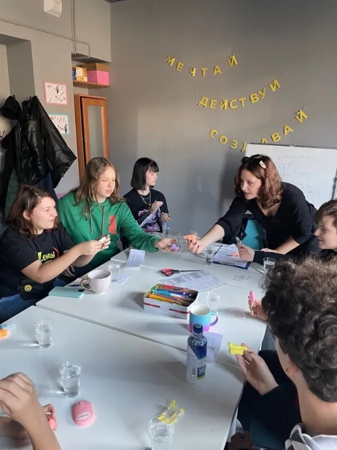
С чем можно ко мне обратиться
Вам ко мне, если стало трудно
Кто-то годами живёт с тревогой и не понимает, откуда она. Кто-то раз за разом попадает в похожие отношения, и они заканчиваются одинаково. Кто-то чувствует, что потерял себя.
Быстрых изменений я не обещаю. На встречах можно остановиться, выдохнуть и разобраться, что с вами происходит.

- Тревога, страхи, внутреннее напряжение
- Сложности в отношениях: с близкими, партнёрами, коллегами
- Повторяющиеся сценарии, которые не дают двигаться дальше
- Чувство «не на своём месте», потеря смысла
- Самооценка, внутренний критик, чувство вины
- Кризисы и большие перемены в жизни
Можно прийти с чем угодно, в том числе с тем, что трудно назвать словами.
Первая встреча
С первой встречи знакомства. Мы говорим о том, что вас привело, что вас беспокоит, чего вы ждёте от работы. Это разговор: я помогаю сформулировать запрос и понять, подходит ли вам мой подход. По итогам первой встречи мы вместе решаем, продолжаем ли работу и в каком формате.
Что происходит на встрече
Вы говорите о том, что для вас важно: о своих чувствах, мыслях, отношениях, снах, воспоминаниях. Я слушаю, задаю вопросы, обращаю внимание на то, что легко пропустить. Это совместное исследование: мы вместе постепенно понимаем, откуда берутся ваши трудности и как они связаны с вашей историей.
Сколько длится работа
Сроков я не обещаю: это зависит от запроса и вашей истории. Мы регулярно обсуждаем, как идёт работа, и вы в любой момент можете предложить что-то изменить.
Ребёнок капризничает, замкнулся или не хочет в школу?
Дети не всегда могут сказать словами, что их тревожит. Иногда они «ведут себя не так»: боятся, дерутся, замыкаются. За этим почти всегда стоит что-то важное, что ребёнок пока не умеет выразить иначе.
Я работаю с детьми с 7 лет и подростками: через игру, рисунок и разговор. И обязательно вместе с родителями, потому что многое меняется дома.

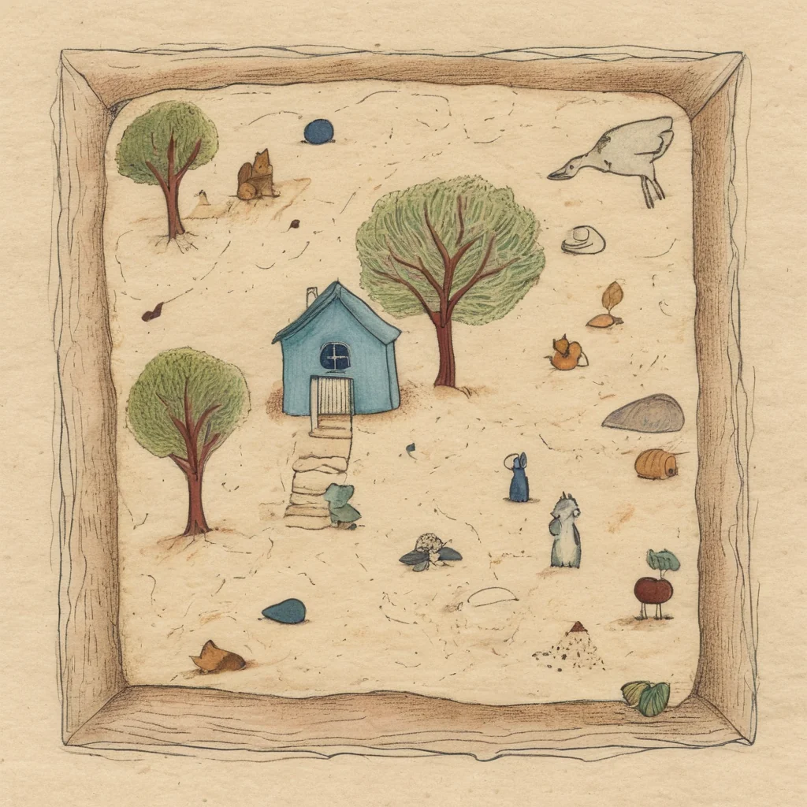
- Тревожность, страхи, ночные кошмары
- Трудности адаптации: к школе, новым условиям, переезду
- Замкнутость, сложности в общении со сверстниками
- Агрессивность, капризы, «непослушание», за которыми стоит что-то большее
- Семейные изменения: развод родителей, появление младшего ребёнка, потеря близкого
- Трудности в школе: неуспеваемость, отказ учиться, конфликты с учителями
- Травматичные события и горе
- Подростковые кризисы, вопросы самооценки и идентичности
- Если кажется, что с ребёнком «что-то не так», но не получается сформулировать что
Встреча с родителями
Обсуждаем, что происходит с ребёнком и что вас беспокоит. С младшими детьми первую встречу можно провести вместе: так ребёнку спокойнее.
Занятия с ребёнком
Игра, рисунок, лепка, сказка, разговор — естественный для ребёнка язык. С подростками — разговор, бережно и с уважением к их границам.
Регулярные встречи с вами
Обсуждаем, как меняется состояние ребёнка и что можно сделать дома. Вы участвуете в работе на каждом этапе.
Сколько нужно встреч
Это зависит от запроса и от ребёнка. Иногда достаточно нескольких встреч, чтобы стало легче, иногда нужна более длительная работа. Я не обещаю «избавить за три сессии», но мы регулярно обсуждаем динамику и вместе решаем, как двигаться дальше.
Если тебе от 12 до 18 лет
Я не буду тебя воспитывать и оценивать. Моя задача — помочь тебе разобраться в том, что ты чувствуешь, и найти способы с этим справляться.

С чем ко мне приходят подростки
- Трудности в школе, давление, усталость
- Отношения с родителями: конфликты, непонимание, чувство, что тебя не слышат
- Отношения со сверстниками: дружба, влюблённость, конфликты, травля
- Самооценка: «я хуже других», сравнение с другими
- Вопросы о себе: кто я, чего я хочу, куда двигаться
- Переживания, которыми трудно поделиться с близкими
- Тревога, страхи, ощущение, что «что-то не так»
- Депрессивные эпизоды разной степени тяжести
- Расстройства пищевого поведения
- Суицидальные мысли и намерения, самоповреждающее поведение
Если есть угроза жизни, я советую обратиться к психиатру.
Как это происходит
Мы просто разговариваем. Ты можешь говорить о том, о чём хочешь, или молчать, если пока не хочется. Я не буду заставлять тебя говорить «по плану» и не буду передавать родителям то, что ты рассказываешь, кроме ситуаций, когда речь идёт о твоей безопасности. Это важно, и я говорю об этом честно с самого начала.
С этой оговоркой всё, что происходит на наших встречах, остаётся между нами.
Что важно знать
- Тебе не нужно быть «в форме» или «формулировать проблему». Можно прийти просто с ощущением «мне плохо», и мы начнём с этого.
- Ты можешь сказать «я не хочу об этом говорить», и это будет уважаться.
- Если тебе не понравится со мной работать — это нормально, можно сказать об этом. Я не обижусь.
Если ты читаешь это и чувствуешь, что тебе нужна поддержка, скажи об этом родителям или напиши мне. Если трудно подобрать слова, можно написать просто: «мне нужна помощь».
Позвони на детский телефон доверия. Это бесплатно, анонимно и круглосуточно.
8 800 2000-122Сколько стоит встреча
Встреча длится 50 минут. Как правило, раз в неделю в одно и то же время. Онлайн тоже можно: важно только тихое место, где вас никто не прервёт, и стабильная связь.
- Индивидуальная консультация50 минут, очно в Санкт-Петербурге4 000 ₽
- Онлайн-консультация50 минут, по видеосвязи4 000 ₽
- Парная консультация90 минут7 000 ₽
- Встреча с ребёнком или родителямиуточнить цену и длительность—
Оплата
После встречи, онлайн.
Отмена и перенос
Бесплатно отменить или перенести встречу можно не позже чем за сутки.
Частые вопросы
Это конфиденциально?
Да. Всё, что происходит на наших встречах, остаётся между нами. Если у вас есть вопросы о конфиденциальности, мы можем обсудить их на первой встрече.
А если я не знаю, о чём говорить?
Нет. Не нужно готовить темы, правильные вопросы или отчёты. Можно приходить с тем, что есть: с усталостью, с пустотой, с раздражением, с желанием помолчать. Всё это материал для работы.
Так бывает часто, и это нормально. Молчание, ощущение пустоты — тоже часть процесса, и мы можем исследовать это вместе. Вам не нужно быть хорошим клиентом и развлекать меня. Достаточно быть собой.
Вы проходите личную терапию и супервизию?
Да, личная терапия и супервизия помогают мне сохранять ясность и не приносить в работу с вами свои слепые пятна.
С какого возраста вы работаете?
С 7 лет и старше, включая подростков.
Нужно ли мне присутствовать на встрече ребёнка?
С детьми младшего возраста первая встреча часто проходит вместе с родителем, так ребёнку спокойнее. Дальше, как правило, мы работаем один на один, а с вами встречаемся отдельно. С подростками важно пространство наедине — это часть уважения к их автономии.
Вы мне расскажете всё, что говорит ребёнок?
Я берегу доверие ребёнка: без него работа невозможна. Я расскажу вам о том, что важно для безопасности и благополучия ребёнка, и о том, как меняется его состояние. Но личные переживания, которыми ребёнок делится со мной, остаются между нами. При этом мы регулярно встречаемся с вами и обсуждаем всё, что важно для процесса.
Ребёнок не хочет идти. Как ему объяснить?
Скажите просто и честно, без пугающих формулировок. Например: «Есть взрослая, с которой можно поговорить о том, что тебя беспокоит. Ей можно рассказать про школу, про друзей, про то, что тебе грустно или страшно. Она не будет тебя ругать». Не нужно говорить «тебя там полечат» или «тебя научат себя вести» — это создаёт ощущение, что с ребёнком «что-то не так».
Это нормально: новое место и новый взрослый вызывают тревогу. Не заставляйте и не давите. Можно предложить: «Давай сходим один раз, просто посмотрим. Если не понравится, не будем ходить». Часто после первого раза тревога спадает, и дальше ребёнок идёт спокойнее. Если сопротивление сильное, мы можем сначала встретиться с вами без ребёнка и вместе подумать, как сделать первый шаг мягче.
Дипломы и сертификаты
- 2025 Санкт-Петербургский государственный институт психологии и социальной работы, бакалавриат «Психология», диплом с отличием
- 2026 Всероссийская научно-практическая конференция «Психическое здоровье подростков: от саморазрушения к жизнестойкости», Санкт-Петербург
- 2026 Семинар «Особенности работы с суицидальным и аутоагрессивным поведением у несовершеннолетних», СПб ГБУСО «Транзит»
- 2026 Лекция по семейному консультированию «Семейный симптом как отражение дисфункциональных процессов в семье», СПб ГБУСО «Транзит»
- 2025 Курс «Теория и практика групповой психотерапии» Ирвина Ялома и Молин Лесц, NEWPSY
- 2023 Вебинар «Алгоритмы и технологии работы с эмоциональными состояниями клиента в состоянии кризиса», центр «Метафора»
- Онлайн-конференция «Завершение сепарации как путь к психологической зрелости», центр «Метафора», 16 академических часов
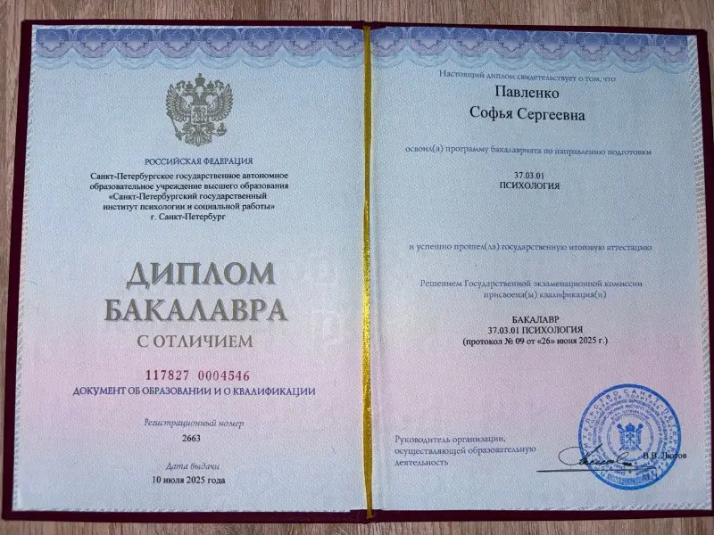
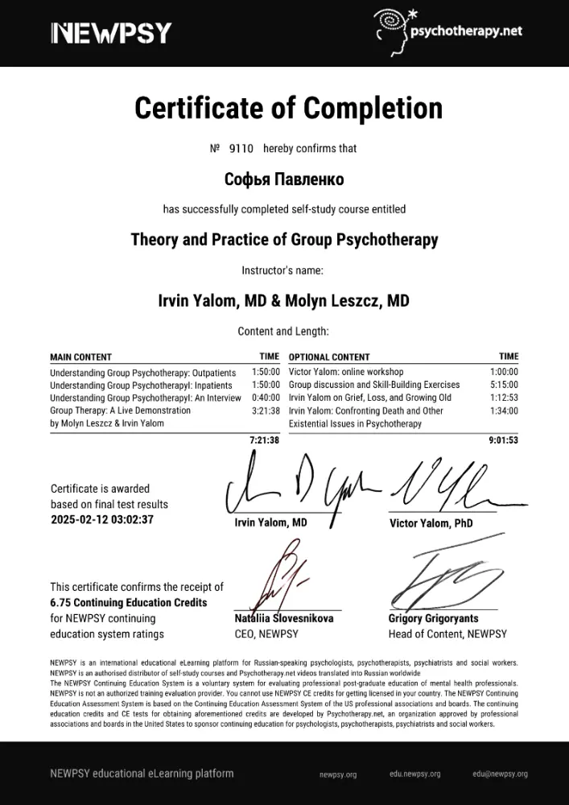
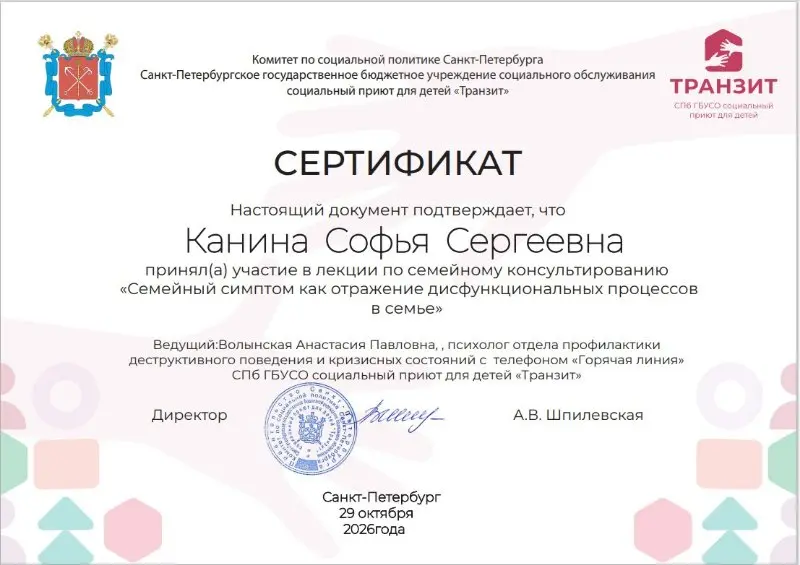
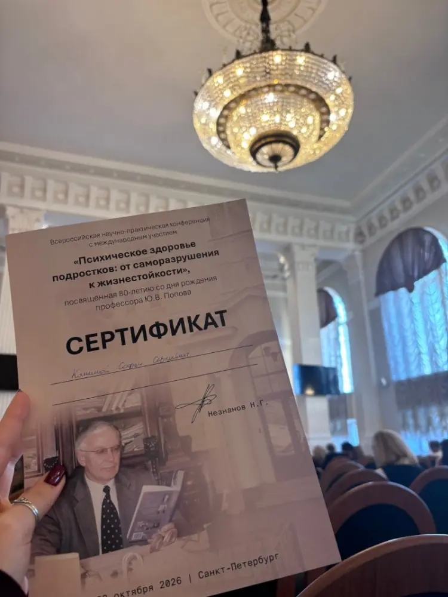
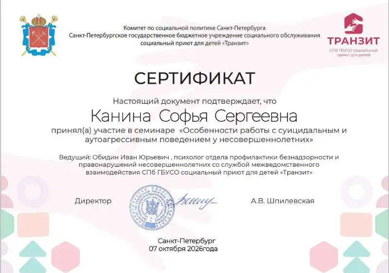
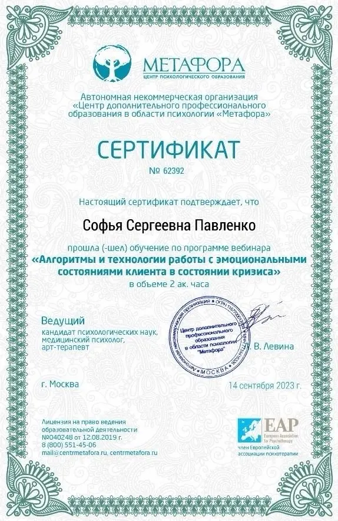
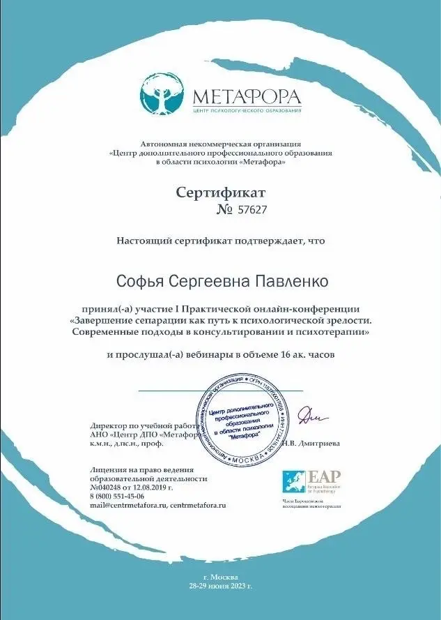
Чтобы записаться, напишите мне в Telegram
Коротко расскажите, что вас беспокоит, и мы договоримся о времени первой встречи. Очные встречи проходят в Санкт-Петербурге. уточнить: адрес